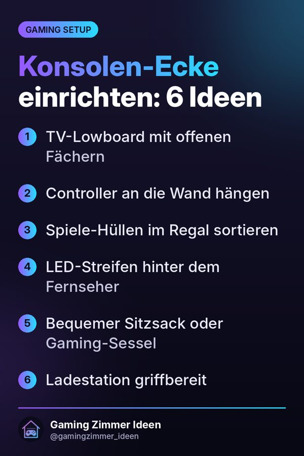

Konsolen-Ecke einrichten: 6 Ideen für PlayStation, Xbox & Switch

Konsolen Ecke einrichten leicht gemacht: Ein Lowboard mit offenen Fächern, Controller an der Wand, Spiele ordentlich im Regal, LED-Streifen hinter dem Fernseher, ein bequemer Sitzplatz und eine Ladestation griffbereit. So wird aus jeder Zimmerecke ein gemütlicher Gaming-Platz. Jetzt merken!
Auf einen Blick
- TV-Lowboard mit offenen Fächern
- Controller an die Wand hängen
- Spiele-Hüllen im Regal sortieren
- LED-Streifen hinter dem Fernseher
- Bequemer Sitzsack oder Gaming-Sessel
- Ladestation griffbereit